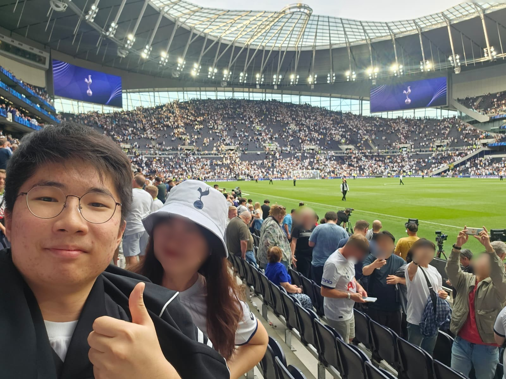
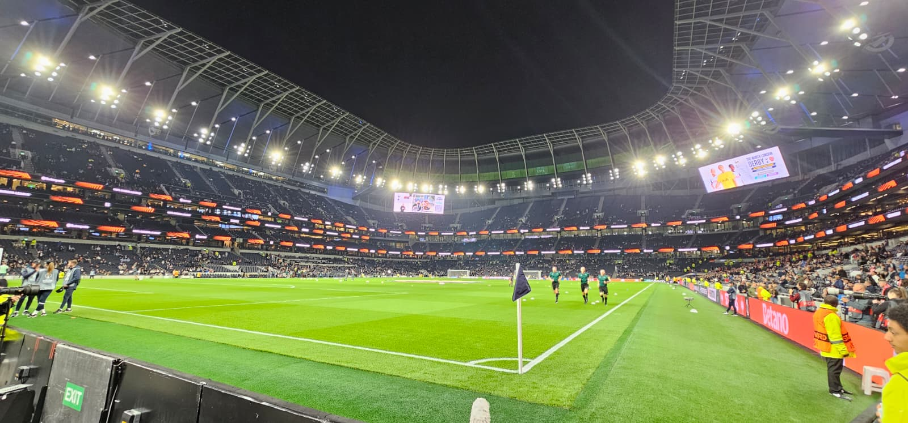
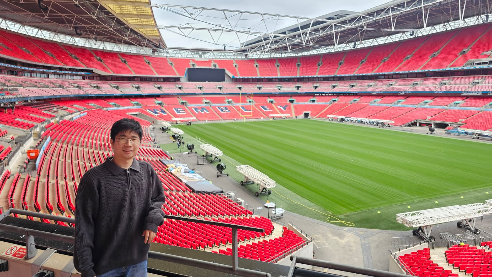
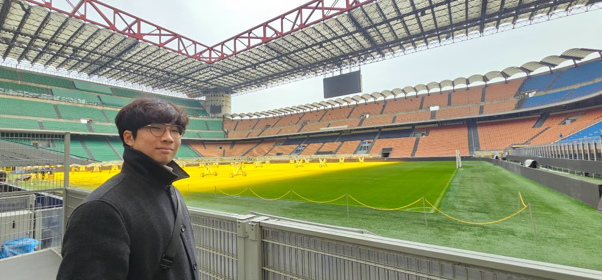
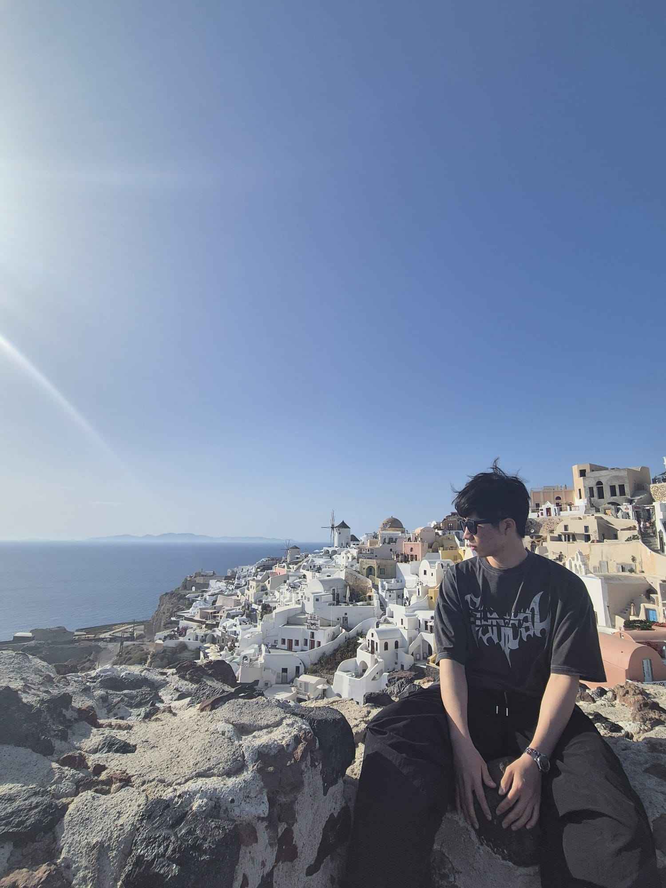

About Me
Hey! I'm Junwoo — born in Yongin, South Korea, and currently a student at University College London. I have a genuine curiosity for cybersecurity and software engineering: I love building websites, digging into how systems work under the hood, and exploring security concepts that keep them safe.
Outside of tech, you'll find me travelling whenever I get the chance, watching football (huge fan), or on the court / pitch playing badminton, football, or volleyball.
Technologies I Work With
- Python
- JavaScript / TypeScript
- React
- Node.js
- Java
- SQL & PostgreSQL
- Firebase
- AWS
- Docker
- Git / CI-CD
- Linux / Bash
My Education
University College London
London, United Kingdom
- MEng Computer Science · Expected First Class Honours
- Key modules: Systems Engineering · Software Engineering · Algorithms · Introduction to Cryptography · Computer Systems · Object-Oriented Programming · Discrete Mathematics
- Treasurer, Korean Society (2 years)
Skills Gained
- Full-Stack Development
- Cryptography
- Post Quantum & Quantum Cryptography
- Algorithms & Data Structures
- Systems Engineering
- Object-Oriented Design
- Problem Solving
- Application Development
Anderson Serangoon Junior College
Singapore
- Singapore GCE A-Level | H2 Mathematics · H2 Physics · H2 Chemistry · H1 Economics · H1 General Paper · H1 Project Work · H3 Mathematics
- Class Leader · Football CCA (2 years)
- 87.5 Rank Points · A in H2 Math, Physics & Chemistry and H1 Economics · Merit Award, H3 Mathematics
Tanglin Secondary School
Singapore
- Singapore GCE O-Level — Science Stream | Pure Physics · Pure Chemistry · Additional Mathematics · Combined Humanities (Social Studies & Geography)
- Head of Publicity & Secretary, Prefect Committee · Basketball CCA (4 years)
- A1 in A-Math, E-Math, Physics, Chemistry & Combined Humanities · Silver Award, Asian International Mathematics Olympiad (AIMO)
Bright Academy
Cebu, Phillippines
- Badminton Team Captain · Class Leader
Hobbies Outside Tech
Football & Stadiums




Travels
